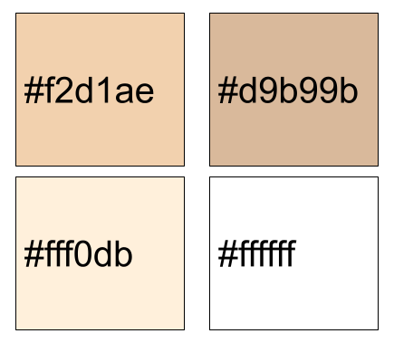
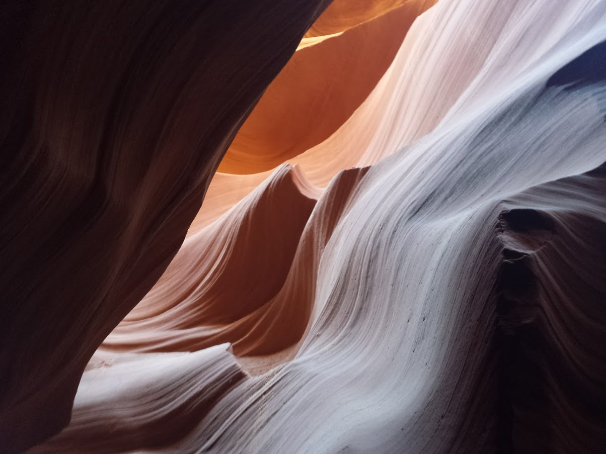

1 / 7
Colors
I chose these colors because I wanted a warm theme to the website. Many of my other websites had blueish themes to them, so I decided to try something new, as I thought this beige ish color scheme worked well together.

2 / 7
What I Offer
I am an experienced programmer and web designer, and I can make a functional site that also has aesthetic appeal. This year, I am taking the Web Design and Development Course at American High School, and have become extremely familiar with html, css, and javascript.

3 / 7
Personality Traits
- Patient
- Easygoing
- Hard-working
- Resourceful
- Respectful

4 / 7
Styles
- Minimalistic
- Lots of open space
- Emphasis on rectangular shapes
- Dark on light contrast

5 / 7
Photography Skills

6 / 7
Fonts
I chose Benne as a font because it looked elegant and modern. It is a google font that I imported from gstatic, and I think it works well with minimalistic websites. My title was in Cutive Mono.

7 / 7
Other Design Ideas